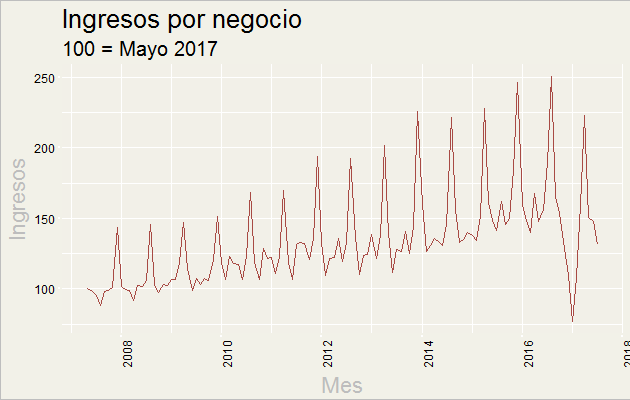

Carta adicional - Beca FUNED - CONACYT
Además de mi aplicación electrónica, quisiera dar luz sobre mi candidatura al préstamo FUNED y beca de CONACYT en el rubro de mi buró de crédito.
Estoy consciente que mi bajo score de buró de crédito puede ser un impedimiento para el financiamiento y por ende solicité un bajo monto, con el fin de tener oportunidad para acceder a la beca del CONACYT.
Por otro lado, mi bajo score del buró de crédito se pueden resumir en tres razones que considero son temporales:
Mis crédito no son personales
Si bien pareciera como un enduedamiento alto para un individuo con mis ingresos, el 99% de los créditos (por monto) son del negcio familiar que administra mi mama. Por razones legales sobre un juicio pendiente de su divorcio, nos vimos en la necesidad de agregar estas deudas a mi nombre. Sin embargo, el juicio se ha resuelto y en consecuencia se ha estado migrando la deuda de la empresa al nombre de mi mama.
Lo anterior significa que en cuestión de algunos meses, las deudas ya no estarán bajo mi nombre.
Problemas temporales
Durante el inicio del 2017, el negocio que administra mi familia, pero esta bajo mi nombre y paga los créditos, sufrió una caída en ingresos nunca antes visto en sus 10 años de historia. Aunado a el miedo causado por la elección de Donald Trump en Estados Unidos, además sufrimos una alza en costos sin precedentes, débido a que somos un negocio de importación neta y el tipo de cambio se depreció considerablemente.
En la siguiente gráfica, que se ha normalizado a 100 desde el primer mes que comenzamos operaciones, se puede apreciar esta situación sin precedentes. Conforme se comiencen a normalizar las condiciones económicas del país, la situación con estos créditos estará controlada.

Considerando que el 52% de todos los pagos vencidos que eh tenido en los últimos 72 meses sucedieron desde enero del 2017, esta es la principal razón por la cuál tengo un score bajo.
Bajo riesgo de pago
A pesar de los resultados en los últimos meses, mi historial crediticio demuestra que siempre me eh esforzado por cumplir con todas mis obligaciones.
Prueba de ello es que en varias ocasiones ya eh pagado créditos enteros completos, como es el caso del leasing de mi auto pasado y tres tarjetas de crédito. Asimismo, pude negociar el pago de la hipóteca a una tasa menor durante Mayo del 2015 débido a mi historial de buenos pagos en otro banco.
De los 14 créditos abiertos que tengo, que han estado vigentes durante un total de 235 pagos mensuales, me eh retraso en solamente 31 de ellos (13.1%) de los cuáles 21 han sido por menos de 30 días. Estos en su mayoría han sido errores de cálculo en cuánto al total que se debía pagar o en cuánto a las fechas de pago.
No tengo ni un solo crédito sin cobrar o en litigio.
Petición a Comité evaluador FUNED
Considerando lo anterior, en vista de que sería relativamente difícil para el comité justificar un préstamo grande a un score tan bajo, es que aplique a solamente una porción pequeña de financiamiento.
Esto con la intención de tener oportunidad para acceder a la beca de CONACYT que conlleva gastos de manutención.
Mi intención es y siempre será regresar al país, para poner mi granito de arena para que sea más productivo y justo para todos aquellos que tienen ganas de superarse. Hoy suplico al Comité considere estas circunstancias temporales, que no son reflejo de la responsabilidad con la cuál me fijo y cumplo metas, para permitirme esta oportunidad única en la vida.
Además, quisiera aclarar que si el comité requiriese de mayor información, referencias, garantía sobre el monto del préstamo o inclusive un pago parcial con apoyo en proyectos, estoy completamente disponible en mi correo electrónico: eduardo@enelmargen.org.